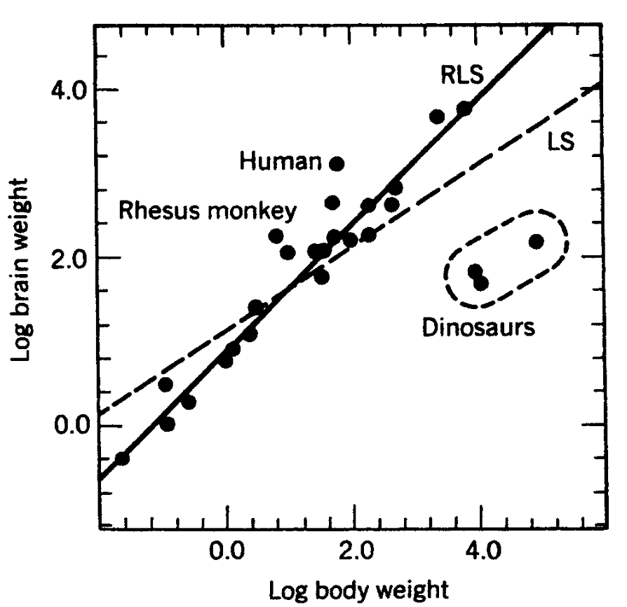
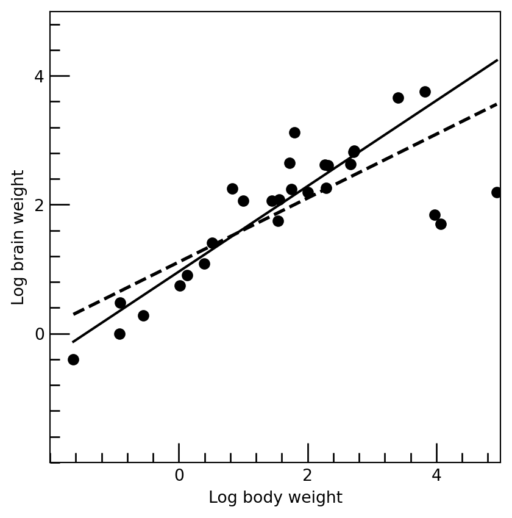

Today date is: 2025-10-24Robust Regression and Outlier Detection
Chapter 2: Simple Regression
Example 4: Brain and Weight Data
Table 7 presents the brain weight (in grams) and the body weight (in kilograms) of 28 animals. (This sample was taken from larger data sets in Weisberg 1980; and Jerison 1973.) It is to be investigated whether a larger brain is required to govern a heavier body. A clear picture of the relationship between the logarithms (to the base 10) of these measurements is shown in Figure 7. This logarithmic
placeholder for the table -
placeholder for the plot -
transformation was necessary because plotting the original measurements would fail to represent either the smaller or the larger measurements. Indeed, both original variables range over several orders of magnitude. A linear fit to this transformed data would be equivalent to a relationship of the form
\[ \hat{y} =\hat{\theta}_2^{\prime} x^{\hat{\theta}_1} \]
between brain weight (y) and body weight (x). Looking at Figure 7, it seems that this transformation makes things more linear. Another impor- tant advantage of the log scale is that the heteroscedasticity disappears. The LS fit is given by

(dashed line in Figure 1). The standard error associated with the slope equals 0.0782, and that of the intercept term is 0.1794. In Section 3, we explained how to construct a confidence interval for the unknown regres- sion parameters. For the present example, n = 28 and p = 2, so one has to use the 97.5% quantile of the t-distribution with 26 degrees of freedom, which equals 2.0555. Using the LS results, a 95% confidence interval for the slope is given by t0.3353; 0.65673. The RLS yields the solid line in Table 1, which is a fit with a steeper slope:
| index | Species | brain | body | |
|---|---|---|---|---|
| 0 | 1 | Mountain beaver | 8.1 | 1.350 |
| 1 | 2 | Cow | 423.0 | 465.000 |
| 2 | 3 | Grey wolf | 119.5 | 36.330 |
| 3 | 4 | Goat | 115.0 | 27.660 |
| 4 | 5 | Guinea pig | 5.5 | 1.040 |
| 5 | 6 | Dipliodocus | 50.0 | 11700.000 |
| 6 | 7 | Asian elephant | 4603.0 | 2547.000 |
| 7 | 8 | Donkey | 419.0 | 187.100 |
| 8 | 9 | Horse | 655.0 | 521.000 |
| 9 | 10 | Potar monkey | 115.0 | 10.000 |
| 10 | 11 | Cat | 25.6 | 3.300 |
| 11 | 12 | Giraffe | 680.0 | 529.000 |
| 12 | 13 | Gorilla | 406.0 | 207.000 |
| 13 | 14 | Human | 1320.0 | 62.000 |
| 14 | 15 | African elephant | 5712.0 | 6654.000 |
| 15 | 16 | Triceratops | 70.0 | 9400.000 |
| 16 | 17 | Rhesus monkey | 179.0 | 6.800 |
| 17 | 18 | Kangaroo | 56.0 | 35.000 |
| 18 | 19 | Golden hamster | 1.0 | 0.120 |
| 19 | 20 | Mouse | 0.4 | 0.023 |
| 20 | 21 | Rabbit | 12.1 | 2.500 |
| 21 | 22 | Sheep | 175.0 | 55.500 |
| 22 | 23 | Jaguar | 157.0 | 100.000 |
| 23 | 24 | Chimpanzee | 440.0 | 52.160 |
| 24 | 25 | Rat | 1.9 | 0.280 |
| 25 | 26 | Brachiosaurus | 154.5 | 87000.000 |
| 26 | 27 | Mole | 3.0 | 0.122 |
| 27 | 28 | Pig | 180.0 | 192.000 |

References
Jerison, Harry J. 1973. Evolution of the Brain and Intelligence. Academic Press.
Weisberg, Sanford. 1980. “Some Large-Sample Tests for Nonnormality in the Linear Regression Model: Comment.” Journal of the American Statistical Association 75 (369): 28–31.